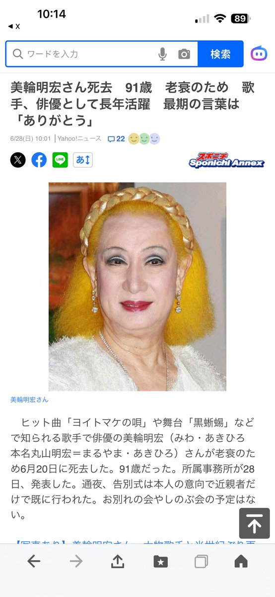
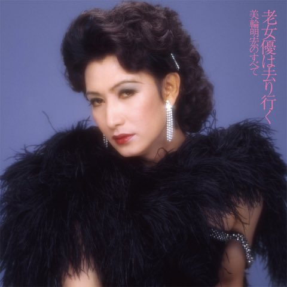
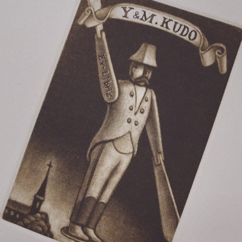

NekoKage📸影貓
@_NekoKage
RT @qiancaobuzhiqiu: 美轮明宏去世了，享年91岁。
他是幽灵公主里的狼王，三岛由纪夫的爱人，川端康成、江户川乱步的好友，更重要的是，他就是他自己。
关于他去世的新闻，报道里的最后一句话是：
“多くの人を愛し、多くの人に愛された人生だった。” https…



浅草不知秋～姚远
@qiancaobuzhiqiu
美轮明宏去世了，享年91岁。
他是幽灵公主里的狼王，三岛由纪夫的爱人，川端康成、江户川乱步的好友，更重要的是，他就是他自己。
关于他去世的新闻，报道里的最后一句话是：
“多くの人を愛し、多くの人に愛された人生だった。” https://t.co/B4Fh8rQCPY